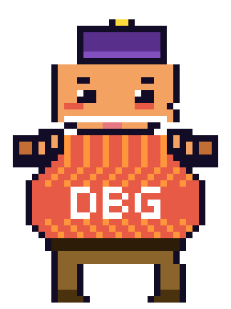

Edit Database Tables Like Vim Buffers
Dadbod Grip is a standalone database client for Neovim. It follows relationships, runs SQL, edits result grids, and shows the exact mutation batch before it reaches the database.
By Jory Pestorious | March 2026; updated August 2026
Dadbod Grip is available on GitHub, and the interactive walkthrough covers the complete workspace.

Chonk
Start With the Incident
ULTRA_BUDGET_XTRM has a softness score of 0.0, a tensile strength of 2.1, and a discontinued flag set to false. It is the first bad fact in Dadbod Grip's bundled Softrear demo database. The same roll appears in a severity 9 consumer incident: "Open floor plan. No music. The third floor is now the second floor people."
The incident points to a recalled production batch, the batch points to a facility with a 3.2 vibe score, and the supplier relationship is marked embargo. I can follow that chain without leaving the database workspace. <C-CR> runs the query block under my cursor. f filters by the current cell, gf follows a foreign key, and <C-o> returns to the previous table. K turns the row into a vertical record, while 4 opens the entity-relationship map.
Once the evidence reaches rolls, I can press i on the discontinued cell and stage true. The row changes color, but the database does not change. gs renders the pending UPDATE, and a applies the same reviewed batch.

The point is not that a terminal grid can imitate a spreadsheet. The record, its relationships, the query that found it, the proposed edits, and the SQL those edits produce remain in one navigable workspace.
A Write Begins as Editor State
Dadbod Grip treats a cell edit, row clone, insertion, or deletion as reversible Neovim state. i edits a cell, d stages a deletion, o inserts a row, and c clones the current row with its primary key cleared. None of those actions writes to the database.
gs opens the complete UPDATE, DELETE, and INSERT batch. gl keeps that SQL visible in a live preview while the staged state changes. The preview and apply paths call the same statement builders in sql.lua, so the batch under review is the batch Grip sends through the selected adapter.
Local undo reaches fifty staged changes, and redo uses <C-r>. After a successful apply, Grip can also generate compensating statements for recent batches. That second path is deliberately best effort. An autogenerated key may not identify an inserted row later, and database output may not preserve the difference between NULL and an empty string.
The engine still defines transaction behavior. Grip wraps a mutation batch in a transaction, but an adapter or database client can handle statement errors differently. I reproduced an SQLite case where an earlier valid statement remained committed after a later constraint failure. After any apply error, I inspect the database before retrying the batch.
One Client Owns the Whole Investigation
Dadbod Grip does not wrap vim-dadbod or hand query execution to another Neovim database plugin. It discovers labeled Docker databases, reads saved connection profiles, selects its own command-line adapter, and opens the schema sidebar, query pad, and result grid together. Existing g:db and g:dbs values are optional compatibility inputs.
The workspace carries the investigation beyond the first query. gf follows foreign keys, reverse relationships remain available, and 4 maps the schema. Views 5 through 9 show statistics, columns, foreign keys, indexes, and constraints. Query Doctor formats an EXPLAIN plan, gD compares two tables by primary key, and exports can leave as CSV, TSV, JSON, SQL, Markdown, or a boxed table.
Saved SQL lives in .grip/queries/, and Markdown files can run selected SQL blocks or the block under the cursor. Built-in completion understands tables, columns, aliases, and attached schemas. The same completion can feed nvim-cmp or blink.cmp when either is already present.
The complete command surface is in the keymap reference.
DuckDB Joins the Sources That Belong Together
A database investigation rarely respects one connection boundary. A shipment can live in PostgreSQL while its supplier record sits in SQLite, and the analyst may receive a Parquet file that belongs in the same query. With DuckDB active, :GripAttach adds PostgreSQL, MySQL, SQLite, or MotherDuck catalogs to the session. :GripOpen opens Parquet, CSV, TSV, JSON, NDJSON, JSONL, XLSX, and supported HTTPS sources.
The query remains ordinary SQL:
SELECT
shipment.shipment_date,
shipment.status,
supplier.real_name,
supplier.relationship_status
FROM supplier.shipments AS shipment
JOIN softrear.bamboo_cartel_members AS supplier
ON supplier.real_name = shipment.supplier_name
ORDER BY shipment.shipment_date DESC;

The attachment, both schemas, schema-qualified completion, the query, and the joined result remain visible in the same session. Project connections can remember attachments in .grip/connections.json. Because that file can contain connection URLs, it belongs outside version control and should never carry an embedded password.
Local files can also open in write mode. Grip stages the grid edits, asks for destructive confirmation, and has DuckDB rewrite the file. That is an export-and-overwrite operation, not a byte-preserving edit. HTTPS sources stay read-only, and watch mode pauses whenever the grid contains staged changes.
Install Dadbod Grip
The stable release requires Neovim 0.10 or newer and the command-line client for the database you plan to use. PostgreSQL uses psql, MySQL uses mysql, SQLite uses sqlite3, DuckDB and file workflows use duckdb, and SQL Server support is read-only through sqlcmd.
-- lazy.nvim
{
"joryeugene/dadbod-grip.nvim",
version = "*",
keys = {
{ "<leader>db", "<cmd>GripConnect<cr>", desc = "DB connect" },
{ "<leader>dg", "<cmd>Grip<cr>", desc = "DB grid" },
{ "<leader>dt", "<cmd>GripTables<cr>", desc = "DB tables" },
{ "<leader>dq", "<cmd>GripQuery<cr>", desc = "DB query pad" },
{ "<leader>ds", "<cmd>GripSchema<cr>", desc = "DB schema" },
},
}
Run :checkhealth dadbod-grip to verify the required local clients. :GripConnect opens your connections, and :GripStart creates the Softrear demo in the current project so the complete workflow can be explored without a production database.
Dadbod Grip is for the investigation that already started in Neovim. It keeps the connection, schema, notebook, result, edit state, and generated write close enough to inspect as one operation.
Links: